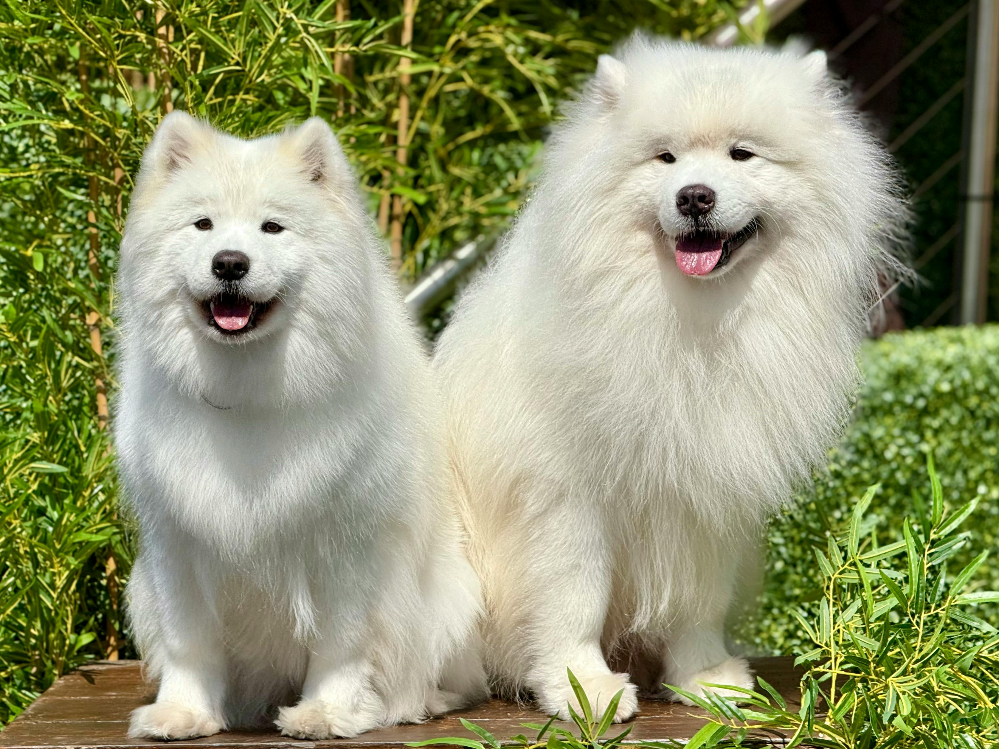
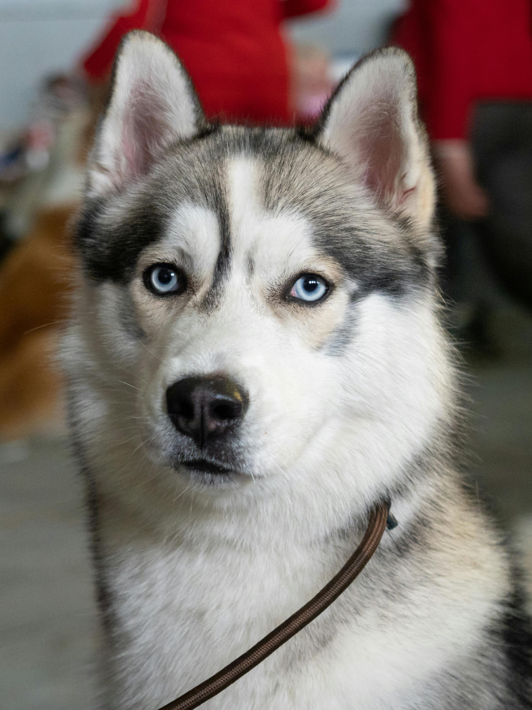
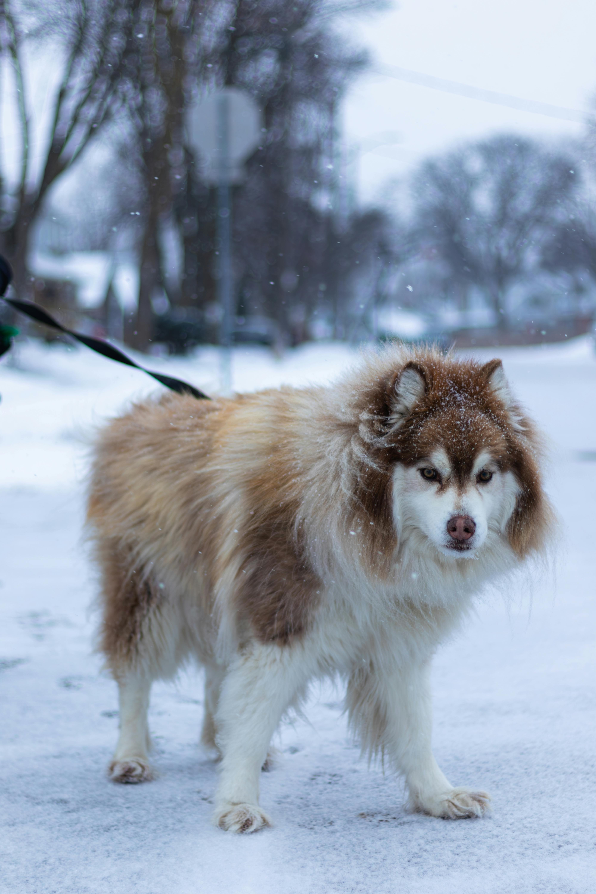
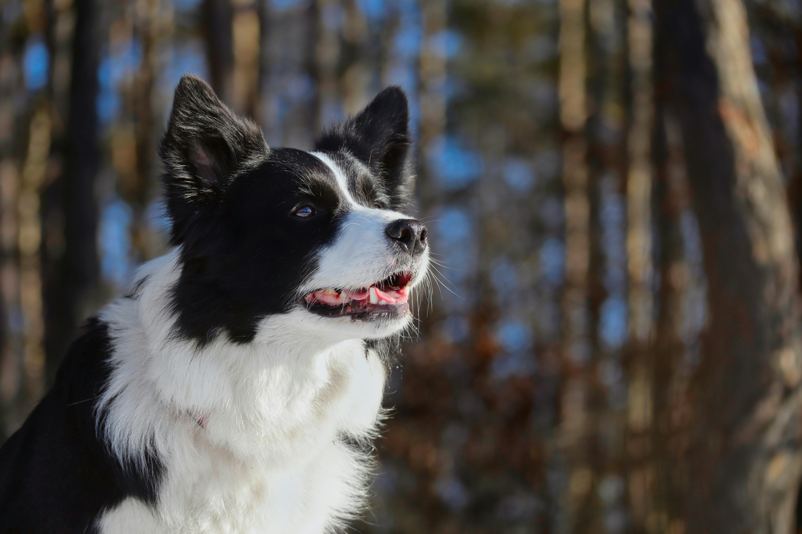
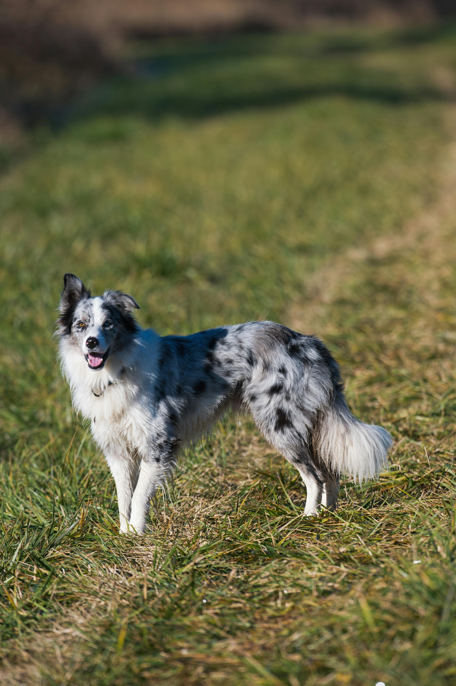
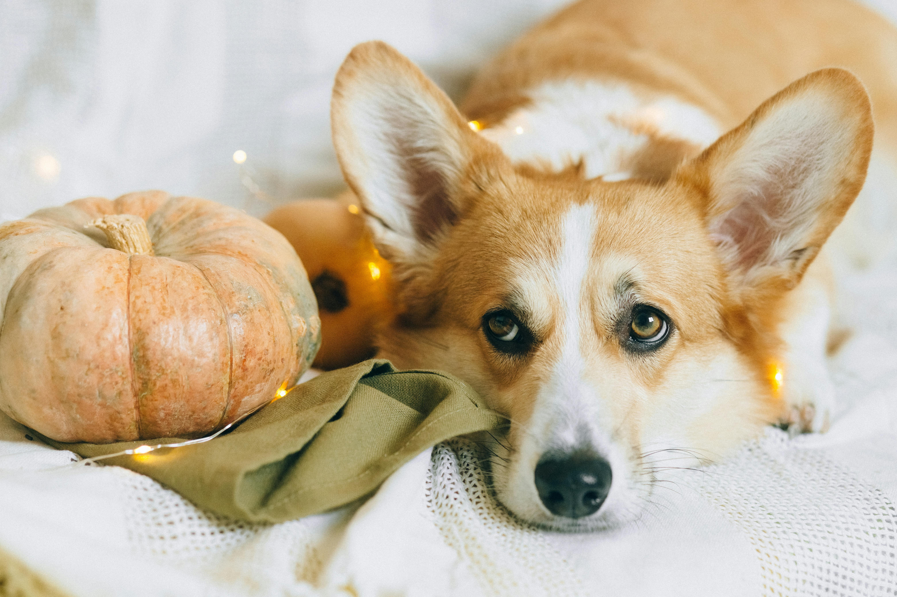
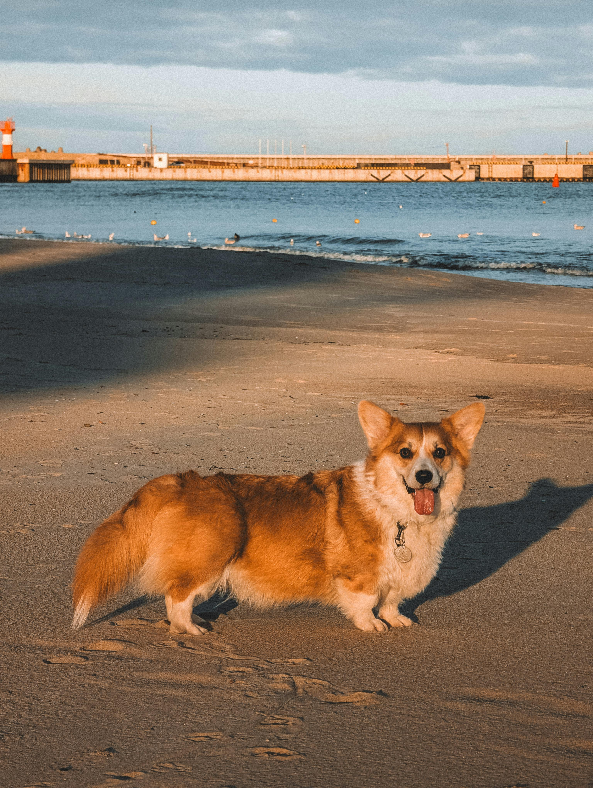
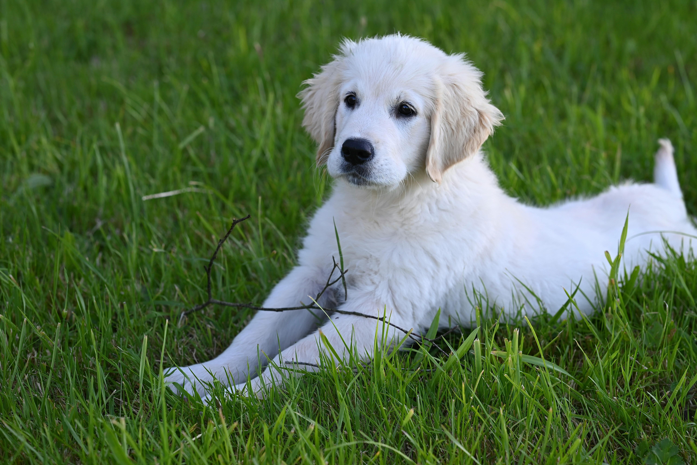
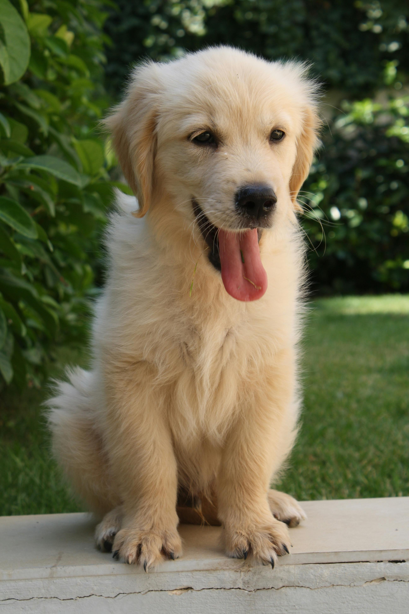

标准萨摩耶 (Samoyed)
西伯利亚的微笑天使
来自西伯利亚，曾用于拉雪橇和看守驯鹿。以雪白蓬松的双层毛和标志性微笑闻名，是非常优秀的家庭伴侣犬。
🩺 饲养建议
- ⚠️ 严重掉毛： 需每日梳理，不适合毛发过敏家庭。
- 🏃 运动量大： 每天需1.5-2小时户外活动，否则易拆家。
📏 基础指标
成年肩高：48-60 cm
平均寿命：12-14 年
智商排名：第 33 名

美式萨摩耶
骨架粗壮的北美系
由北美育种家培育，骨架粗壮，毛发更加丰厚蓬松。性格相对独立，不会过度粘人，服从性较好。
🩺 饲养建议
- ✂️ 毛发打理： 毛量极大，洗澡和吹干极度耗时。
- 🧠 独立性强： 适合不希望狗狗24小时贴身的主人。
📏 基础指标
成年肩高：50-60 cm
平均体重：20-30 kg
智商排名：第 33 名

西伯利亚哈士奇
精力充沛的"撒手没"
性格极其友善但也极其固执，服从性较低，常以"拆家"闻名。
🩺 饲养建议
- 🚪 防走失： 绝不能散养或无牵引绳出门，极易走失。
- ❄️ 怕热： 拥有极厚的双层毛，夏季需注意防暑降温。
📏 基础指标
成年肩高：50-60 cm
平均体重：16-27 kg
智商排名：第 45 名

阿拉斯加雪橇犬
憨厚稳重的力量担当
体型比哈士奇更大更敦实，性格相对稳重。
🩺 饲养建议
- 💪 防爆冲： 力量极大，外出需佩戴防爆冲胸背带。
- 🥣 肠胃脆弱： 被称为"雪橇三傻"中的玻璃胃。
📏 基础指标
成年肩高：58-71 cm
平均体重：34-38 kg
智商排名：第 50 名

黑白边境牧羊犬
犬类智商的天花板
理解能力相当于6-8岁的小孩，需要大量运动和精神激励。
🩺 饲养建议
- 🧠 斗智斗勇： 如果没有足够的任务，它会去"牧"移动的车辆或小孩。
- 🎾 极高互动： 适合有训犬经验的家庭。
📏 基础指标
成年肩高：46-56 cm
平均寿命：12-15 年
智商排名：第 1 名

陨石边境牧羊犬
绝美花色的智商天花板
特殊毛色呈现灰白黑交替的斑块，常有异瞳。
🩺 饲养建议
- ⚠️ 繁育禁忌： 严禁两只陨石边牧交配，极易生出缺陷犬。
- 🎾 精力充沛： 同样需要每天大量消耗体力和脑力。
📏 基础指标
成年肩高：46-56 cm
平均寿命：12-15 年
智商排名：第 1 名

德国牧羊犬
万能的工作犬之王
世界上最著名的军警犬之一，极度忠诚、勇敢且智商极高。
🩺 饲养建议
- 🦴 骨骼问题： 易患髋关节发育不良，幼犬期需控制体重。
- 🐕 社会化： 必须从小做好社会化训练，防止攻击性。
📏 基础指标
成年肩高：55-65 cm
平均体重：22-40 kg
智商排名：第 3 名

彭布罗克威尔士柯基
英国女王的挚爱
最常见的柯基品种，性格机警活泼，底盘稳健。
🩺 饲养建议
- 🦴 保护腰椎： 严禁频繁上下楼梯，防脊椎病。
- ⚖️ 控制体重： 易胖体质，避免过度喂食。
📏 基础指标
成年肩高：25-30 cm
平均体重：10-14 kg
智商排名：第 11 名

卡迪根威尔士柯基
大耳朵长尾巴的守卫
保留了像狐狸一样的长尾巴，性格相对更为沉稳。
🩺 饲养建议
- 🦴 保护腰椎： 同样底盘低，需要避免剧烈跳跃。
- 🛡️ 警戒心： 相比彭布罗克更为谨慎。
📏 基础指标
成年肩高：26-32 cm
平均体重：11-17 kg
智商排名：第 26 名

英系金毛
骨量充沛的大暖男
毛色偏向浅金甚至乳白色，性格极其温顺，服从性极高。
🩺 饲养建议
- 🐕 晚熟： 3岁前比较调皮，3岁后变得非常稳重。
- 🌊 毛发护理： 极易患皮肤病，洗完澡必须彻底吹干。
📏 基础指标
成年肩高：51-61 cm
平均寿命：10-12 年
智商排名：第 4 名

美系金毛
深色修长的运动健将
体型更加修长轻盈，毛色通常为深金色或铜色，性格更加活泼奔放。
🩺 饲养建议
- 🏃 极高运动量： 相比英系需要更多的户外消耗。
- ❤️ 极度亲人： 不适合长时间独自留在家中。
📏 基础指标
成年肩高：51-61 cm
平均体重：25-34 kg
智商排名：第 4 名